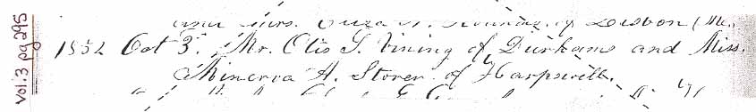
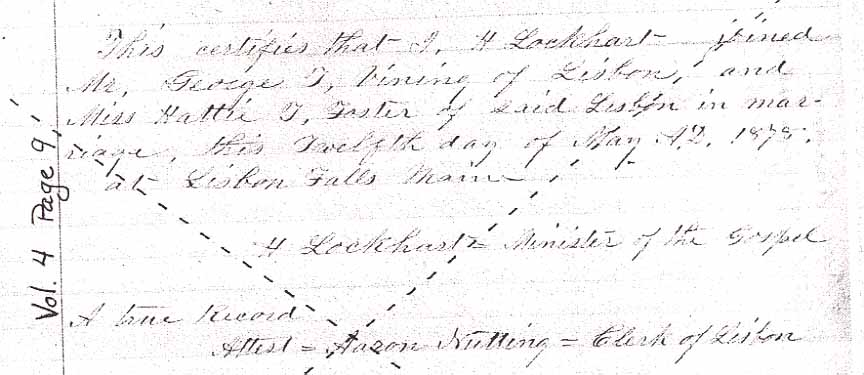
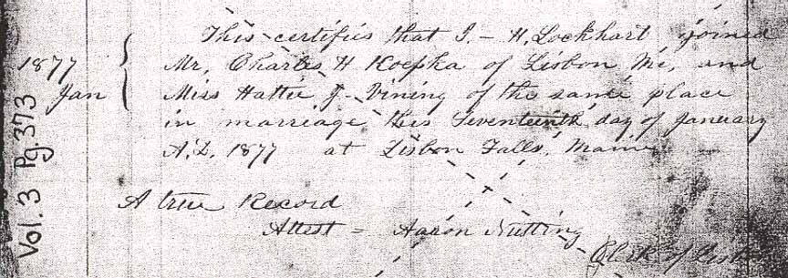
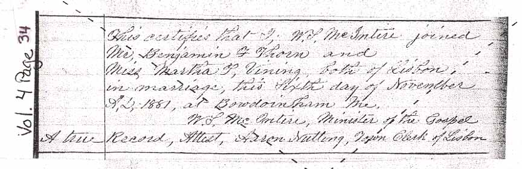
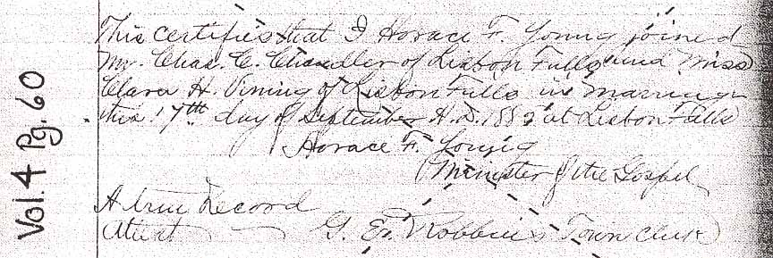
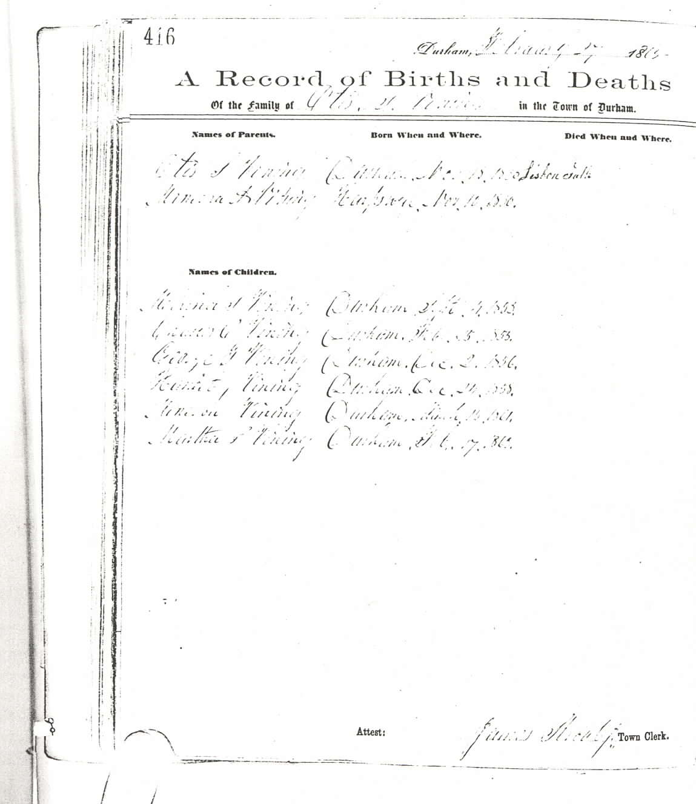
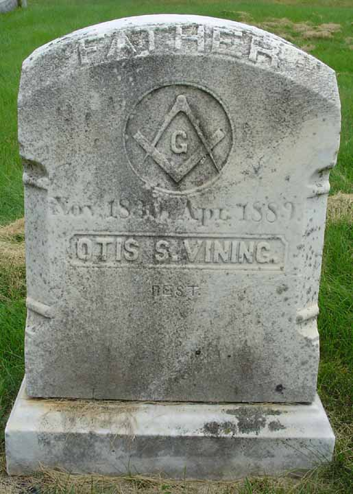
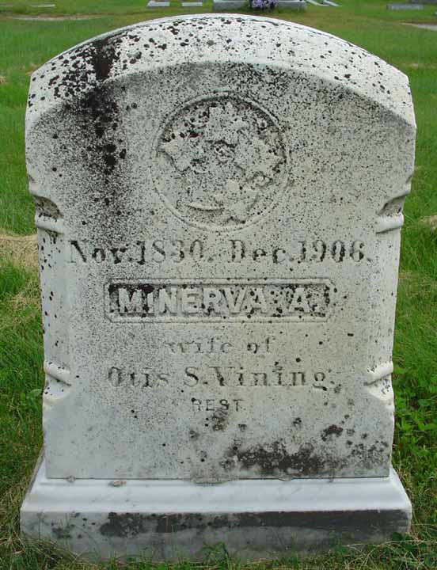
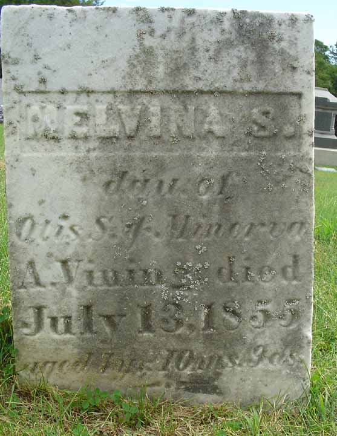
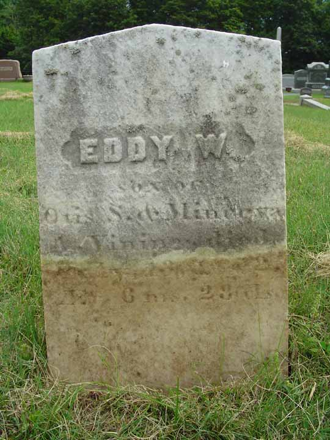

Marriage Data
Marriage intentions of Otis S. Vining and Minerva A. Storer, from Lisbon, Maine, town records. The dashed diagonal lines showing in the marriage intentions record are placed there by the town of Lisbon to show that it is not a certified record.




Family Data
The town of Durham, Androscoggin County, Maine, has photocopied its vital record books, and those photocopies are available for public viewing. Unfortunately, much of the photocopied material is very difficult to impossible to read. Below is the 27 February 1865 page (greatly enlarged) reporting the family of Otis S. Vining and Minerva A. Storer.
Census Data
| 1860 | 1870 | 1880 | 1890 | 1900 | 1910 | |
| Otis Smith Vining | 29 | 39 | 49 | dead | ||
| Minerva A. (Stover) Vining | 29 | 39 | 49 | ? | 69 | dead |
| Melvina S. Vining | dead | |||||
| Charles Otis Vining | 5 | 15 | 25 | ? | married and living in separate household | |
| George Thomas Vining | 3 | 13 | married and living in separate household | |||
| Harriet Jane Vining | 1 | 11 | married and living in separate household | |||
| Minerva Ann Vining | 9 | 19 | ? | [living? in separate household] | ||
| Martha Plummer Vining | 7 | 17 | married [and living in separate? household] | |||
| Clara Helen Vining | 4 | 15 | married [and living in separate? household] | |||
| Frederick Elmer Vining | 2 | 12 | married [and living in separate? household] | |||
| Edwin Wilson Vining | dead |


Death Data
Gravestones for Otis S. Vining and Minerva A. Storer, in Hillside Cemetery, Lisbon, Maine.


